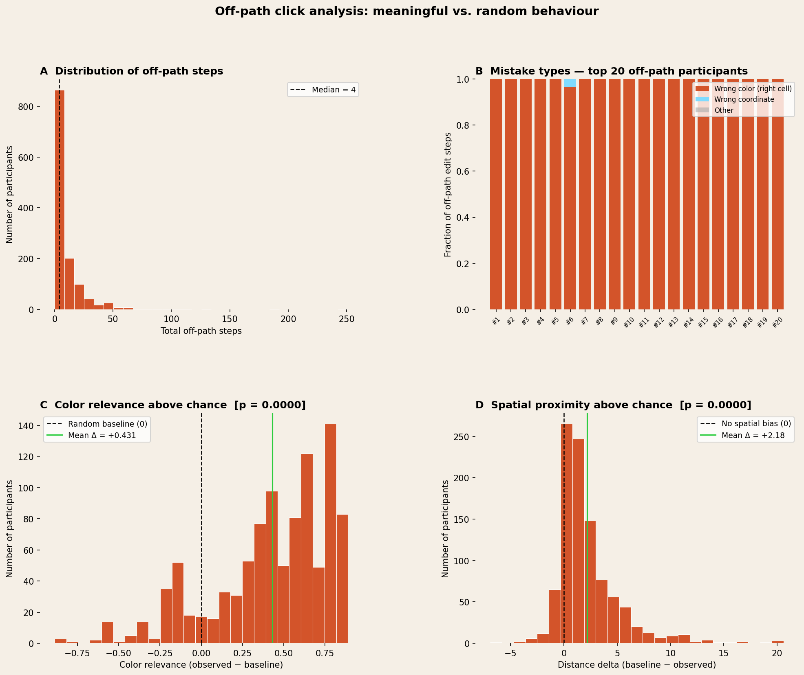
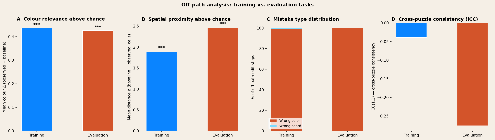
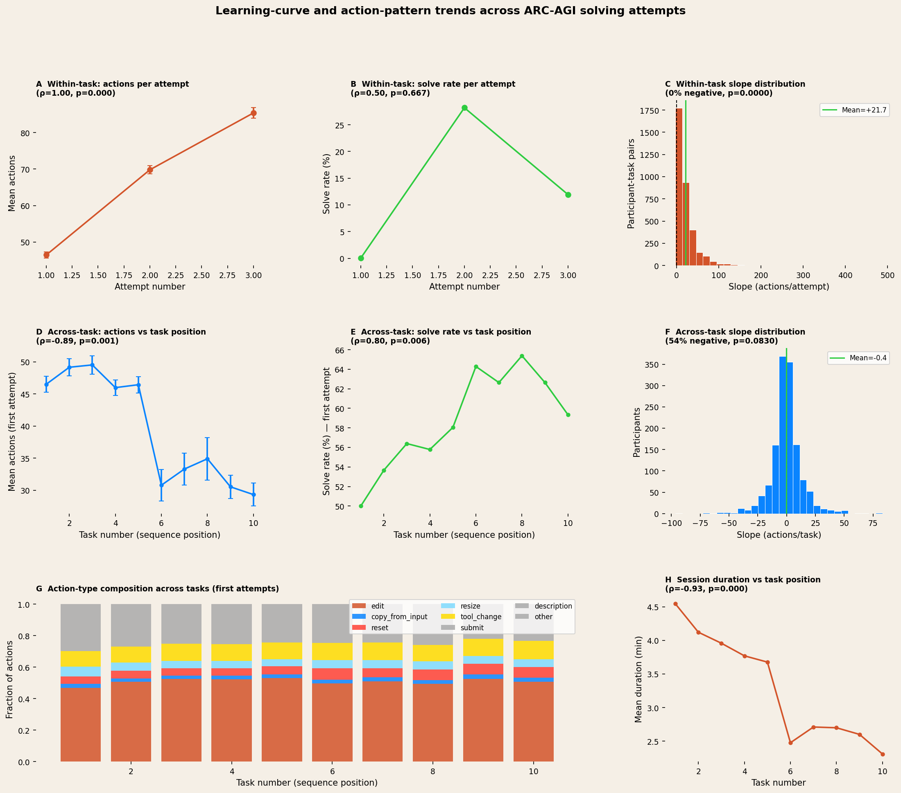
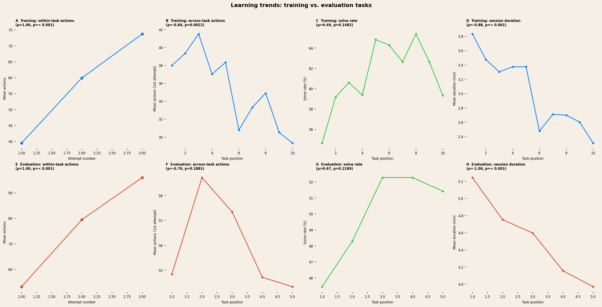

Introspection — ARC-AGI
Analysis Results
Three analyses of participant behaviour: high-click identification, off-path meaningfulness, and learning curves across attempts.
1. 95th-Percentile High-Click Participants
Participants were ranked by mean action count across their solved, complete attempts
(solved = true, complete = true). Those in the top 5% and
with four or more distinct solved puzzles were identified as high-click participants.
The 95th-percentile threshold was 118.8 mean actions per attempt.
Top 15 participants by mean action count (solved + complete attempts, ≥ 4 puzzles):
| Rank | Participant ID | Mean actions | Total actions | Attempts | Puzzles |
|---|---|---|---|---|---|
| 1 | 186844c513023d14… | 164.3 | 657 | 4 | 4 |
| 2 | 22fabcb92d8909e7… | 163.5 | 654 | 4 | 4 |
| 3 | b18f26f0d6c59db3… | 157.6 | 788 | 5 | 5 |
| 4 | 310549a148748e20… | 152.0 | 456 | 3 | 3 |
| 5 | b2950e829680cf0f… | 151.8 | 607 | 4 | 4 |
| 6 | b565b9251253827e… | 151.0 | 453 | 3 | 3 |
| 7 | 01b14747ad84d6e0… | 144.5 | 578 | 4 | 4 |
| 8 | 0954867f72ce8586… | 143.4 | 717 | 5 | 5 |
| 9 | 3070dc728d89aeb3… | 143.0 | 286 | 2 | 2 |
| 10 | b26c49180b83bf94… | 142.8 | 571 | 4 | 4 |
| 11 | 7cdd9795e41b26aa… | 142.0 | 568 | 4 | 4 |
| 12 | 7426449648c92ad3… | 140.0 | 700 | 5 | 5 |
| 13 | 4b9ff461bcb8a879… | 139.2 | 557 | 4 | 4 |
| 14 | c6b4b18668656e1e… | 138.7 | 1248 | 9 | 9 |
| 15 | 3914f6c13e5d791a… | 138.2 | 553 | 4 | 4 |
Full ranked list: Analysis/results/p95_high_clickers.md
2. Off-Path Behavior: Meaningful or Random?
For each solved attempt, every edit action was classified as aligned (on-path) or off-path by comparing the clicked cell and applied colour against the required-change grid. Three metrics tested whether off-path behaviour is structured rather than random: colour relevance, spatial proximity, and cross-puzzle consistency.
Mistake type distribution
| Category | Count | % |
|---|---|---|
| Wrong color (correct cell) | 11,280 | 99.5% |
| Wrong coordinate | 52 | 0.5% |
The overwhelming dominance of wrong-color errors indicates participants reliably identify which cells need to change — their errors lie in colour selection, not spatial reasoning.
Statistical tests
| Metric | Observed | Baseline | Δ | p |
|---|---|---|---|---|
| Colour relevance | 0.753 | 0.345 | +0.408 | p < .001 |
| Spatial proximity (dist. to nearest target, cells) | 1.06 | 3.24 | −2.18 | p < .001 |
| Cross-puzzle consistency (ICC(1,1)) | −0.120 — low consistency | — | ||
Colour relevance and spatial proximity baselines use within-task random sampling. ICC partitions off-path rate variance between vs. within participants.
- Off-path steps use solution-relevant colours at 2.2× the rate expected by chance (Δ = +0.408, Wilcoxon p < .001), indicating purposeful colour selection even when wrong.
- Off-path clicks land 3× closer to target cells than a uniformly random placement (1.06 vs. 3.24 grid cells, p < .001) — participants are working in the right spatial neighbourhood.
- ICC = −0.120 indicates low between-participant consistency; off-path behaviour varies primarily by task difficulty rather than individual style.
- High off-path participants show modestly lower colour relevance than low off-path participants (Δ = 0.427 vs. 0.436, Mann-Whitney p = .009), suggesting their extra mistakes are slightly less targeted in colour choice.

Training vs. evaluation task breakdown
All metrics were recomputed separately for the two task types. Both show highly significant colour relevance and spatial proximity above chance. Evaluation tasks produce more off-path steps overall (6,394 vs. 4,938), slightly higher colour relevance (0.778 vs. 0.720), and stronger spatial proximity (Δ = 2.45 vs. 1.88 cells). Wrong-coordinate errors are more common on training tasks (0.7% vs. 0.2%), suggesting marginally more spatial uncertainty on novel evaluation patterns. ICC is negative for both, more so for evaluation (−0.276 vs. −0.039), confirming task features dominate over individual style in both sets.
| Metric | Training | Evaluation |
|---|---|---|
| Participants with off-path steps | 644 | 631 |
| Total off-path edit steps | 4,938 | 6,394 |
| Mean colour relevance (observed) | 0.720 | 0.778 |
| Mean colour Δ | +0.436 | +0.426 |
| Colour relevance p | p < .001 | p < .001 |
| Mean spatial proximity Δ (cells) | +1.88 | +2.45 |
| Spatial proximity p | p < .001 | p < .001 |
| % wrong-color errors | 99.3% | 99.8% |
| % wrong-coordinate errors | 0.7% | 0.2% |
| ICC(1,1) cross-puzzle consistency | −0.039 | −0.276 |

3. Learning Curves and Action Patterns
Two complementary trajectories were examined: within-task learning (how behaviour changes across repeated attempts at the same puzzle) and across-task learning (how behaviour evolves across different puzzles in session order). Spearman ρ and Wilcoxon signed-rank tests assessed direction, magnitude, and reliability. Effect strength: |ρ| > 0.5 = strong, 0.3–0.5 = moderate, < 0.3 = weak.
Within-task (attempt 1 → 2 → 3)
| Metric | ρ | p | Strength |
|---|---|---|---|
| Action count | +1.000 | p < .001 | Strong ↑ |
| Solve rate | +0.500 | p = .667 | — |
| Session duration | −1.000 | p < .001 | Strong ↓ |
| Edit fraction | −1.000 | p < .001 | Strong ↓ |
| Copy-from-input fraction | −1.000 | p < .001 | Strong ↓ |
| Submit fraction | +1.000 | p < .001 | Strong ↑ |
On later attempts participants use more actions per attempt but spend less total time and rely less on copy-from-input — suggesting escalating exploratory effort rather than faster, more efficient solving.
Across-task (puzzle 1 → 2 → … first attempts)
| Metric | ρ | p | Strength |
|---|---|---|---|
| Action count | −0.891 | p < .001 | Strong ↓ |
| Solve rate | +0.796 | p = .006 | Strong ↑ |
| Session duration | −0.927 | p < .001 | Strong ↓ |
| Copy-from-input fraction | +0.709 | p = .022 | Strong ↑ |
| Reset fraction | +0.782 | p = .008 | Strong ↑ |
| Submit fraction | +0.818 | p = .004 | Strong ↑ |
| Description fraction | +0.830 | p = .003 | Strong ↑ |
| Other fraction | −0.952 | p < .001 | Strong ↓ |
Across the task sequence, participants solve more and do so faster — strong evidence of session-level learning. The rising copy-from-input and description fractions suggest strategy adoption: participants increasingly use the input as a starting template and write more annotations as their approach matures.
- Within-task action count increases steeply on each retry (+21.7 actions/attempt, ρ = +1.00, p < .001) — participants do not converge on shorter paths when stuck; they elaborate.
- Across-task action count decreases as the session progresses (ρ = −0.89, p < .001), while solve rate rises (ρ = +0.80, p = .006) — a clear signature of global efficiency gains.
- Session duration falls monotonically both within-task (ρ = −1.00) and across tasks (ρ = −0.93, p < .001) — participants work faster regardless of whether they are on a retry or a new puzzle.
- Strategy markers increase across tasks: copy-from-input (ρ = +0.71), reset (ρ = +0.78), submit (ρ = +0.82), and written descriptions (ρ = +0.83) all rise — indicating more structured problem-solving behaviour by the end of a session.

Training vs. evaluation task breakdown
The within-task action increase (ρ = +1.00, p < .001) and session duration decrease (ρ = −1.00 training; ρ = −1.00 evaluation, p < .001) replicate equally strongly for both task types. Across-task action count decrease is significant for training (ρ = −0.84, p = .002) but not for evaluation (ρ = −0.70, p = .188), suggesting participants reduce click volume more reliably as they gain experience with training-style patterns. Solve rate trend across tasks is positive for both but reaches significance for neither in isolation, likely due to reduced statistical power when splitting the sample.
| Metric | Training ρ | Training p | Evaluation ρ | Evaluation p |
|---|---|---|---|---|
| Within-task action count | +1.000 | p < .001 | +1.000 | p < .001 |
| Across-task action count | −0.842 | p = .002 | −0.700 | p = .188 |
| Across-task solve rate | +0.492 | p = .148 | +0.667 | p = .219 |
| Across-task session duration | −0.879 | p < .001 | −1.000 | p < .001 |
